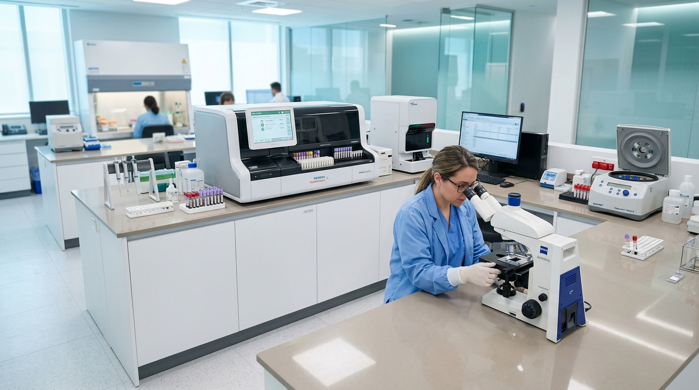

Diagnostic Laboratory Tests & Health Packages
Essential pathology testing and comprehensive health screening panels to support clinical evaluation, preventive monitoring, and chronic disease oversight. Contact our diagnostic desk directly to verify specific test requirements, confirm fasting instructions, and check current charges.
* Direct telephone consultation. Test inquiries, preparation advice, and pricing are confirmed directly with our team without online data submission.

Laboratory tests are diagnostic tools designed to provide objective physiological information to your healthcare provider. A test result outside standard reference ranges does not automatically confirm an illness in isolation; it must be interpreted in clinical context alongside medical history and a physician's examination. Arovia provides direct phone-first guidance to help you understand test parameters, sample readiness, and transparent costs.
Understanding Laboratory Testing & Health Packages
Diagnostic investigations fulfill different clinical purposes depending on whether you require a single targeted parameter or a broad systemic evaluation:
Individual Targeted Tests
Focused laboratory investigations ordered by a physician to investigate specific symptoms or monitor established medical conditions. Common examples include Glycated Hemoglobin (HbA1c) for diabetes control, Complete Blood Count (CBC) for anemia or infection, Serum Creatinine for kidney function, and Thyroid Stimulating Hormone (TSH).
Comprehensive Health Packages
Multi-parameter screening panels that bundle related tests across vital organ systems. These packages provide a holistic baseline assessment of cardiovascular risk (Lipid Profile), liver health (LFT), renal filtration (KFT), and metabolic markers, offering value for periodic preventive reviews.
Preparation & Fasting Protocols
Certain biochemical tests require strict 8 to 12-hour overnight fasting—notably Fasting Blood Sugar and Lipid Panels—to avoid transient dietary spikes. Conversely, tests such as CBC, Liver Enzymes, or HbA1c typically do not require fasting. Always confirm preparation rules before your sample is drawn.
Physician Evaluation of Reports
Laboratory reference intervals represent statistical baselines across healthy populations. Variations can occur due to age, gender, hydration, medications, or minor physiological factors. Reports should always be shared with your attending doctor for qualified clinical interpretation.
What to Prepare When Calling About Diagnostic Testing
Having these essential details ready when you dial our diagnostic desk ensures fast clarification of test requirements and accurate cost estimates:
Doctor's Test Requisition or Exact Test Name
Have the specific test name or physician's requisition slip ready. Knowing the precise investigation (e.g. HbA1c vs. fasting blood sugar, or complete lipid profile vs. total cholesterol) prevents duplicate or unnecessary sample draws.
Fasting Status & Timing Verification
Confirm when you last consumed food or beverages (other than water). Our coordinator will verify whether your requested test requires overnight fasting, early morning collection, or post-prandial timing.
Current Prescription Medications
Inform the coordinator if the patient is actively taking medications such as blood thinners (which require special pressure bandage care after venipuncture), thyroid hormones, corticosteroids, or diabetes drugs that affect test results.
Transparent Fee & Scheduling Confirmation
Applicable test charges and available testing arrangements are quoted directly and transparently over the telephone before any testing is arranged, with no hidden platform fees.
Verified Diagnostic Coordination Desk
Arovia adheres strictly to diagnostic accuracy: we do not display arbitrary test fees or unverified package listings online. Our diagnostic catalog is maintained in coordination with verified laboratory testing protocols. For specific test availability, fasting guidelines, and exact charges, please contact our diagnostic desk directly.
Call Diagnostic DeskFrequently Asked Questions About Lab Tests & Packages
Answers regarding preparation, packages versus individual tests, pricing, and report reviews.
What is the difference between an individual test and a health package?
An individual test measures a specific biochemical or hematological parameter (e.g. Fasting Glucose or Serum Creatinine) to address a targeted diagnostic question. A health package bundles multiple tests across organ systems (such as liver function, lipid profile, and renal markers) to provide a broad preventive overview.
Why do some blood tests require fasting while others do not?
Certain markers—such as glucose, triglycerides, and specific lipid fractions—fluctuate immediately following food digestion. Fasting for 8–12 hours establishes a stable baseline. Other tests, such as complete hemograms or HbA1c, reflect long-term or cellular metrics that are unaffected by recent meals.
Can a laboratory test result alone diagnose an illness?
No. Laboratory results provide objective data that must always be interpreted in conjunction with a patient's clinical history, physical symptoms, and a doctor's examination. Normal reference ranges are statistical guidelines and require medical context.
What details should I have ready when calling about a test?
Have the specific test name or doctor's prescription slip, the patient's approximate age, fasting status (how long since last meal), and a list of current medications. This allows our coordinator to confirm preparation requirements and applicable charges immediately.
How are diagnostic test charges determined?
Fees are determined based on the specific pathology investigation, the methodology required, and whether an individual test or package panel is selected. Standard charges are confirmed verbally over the phone with complete transparency before testing.
Is a doctor's prescription required for all lab tests?
Routine preventive wellness packages and basic health screening tests can often be undertaken for general monitoring. However, specific therapeutic or diagnostic monitoring tests are best guided by a doctor's prescription to ensure the appropriate investigations are performed.
Have Questions About a Diagnostic Test or Package?
Speak directly with our diagnostic desk to check test availability, fasting instructions, sample handling, and applicable charges.